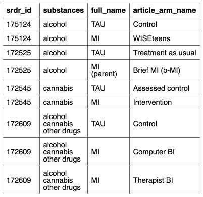
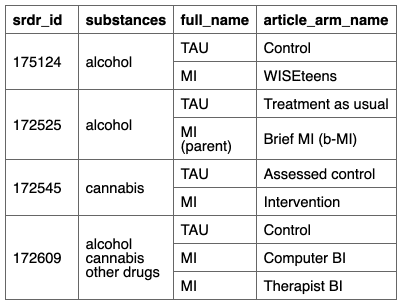

| merge_v {flextable} | R Documentation |
Merge flextable cells vertically when consecutive cells have identical values. Text of formatted values are used to compare values if available.
Two options are available, either a column-by-column algorithm or an algorithm where the combinations of these columns are used once for all target columns.
merge_v(x, j = NULL, target = NULL, part = "body", combine = FALSE)
x |
|
j |
column to used to find consecutive values to be merged. Columns from orignal dataset can also be used. |
target |
columns names where cells have to be merged. |
part |
partname of the table where merge has to be done. |
combine |
If the value is TRUE, the columns defined by |


Other flextable merging function:
merge_at(),
merge_h_range(),
merge_h(),
merge_none()
ft_merge <- flextable(mtcars)
ft_merge <- merge_v(ft_merge, j = c("gear", "carb"))
ft_merge
data_ex <- structure(list(srdr_id = c(
"175124", "175124", "172525", "172525",
"172545", "172545", "172609", "172609", "172609"
), substances = c(
"alcohol",
"alcohol", "alcohol", "alcohol", "cannabis",
"cannabis", "alcohol\n cannabis\n other drugs",
"alcohol\n cannabis\n other drugs",
"alcohol\n cannabis\n other drugs"
), full_name = c(
"TAU", "MI", "TAU", "MI (parent)", "TAU", "MI",
"TAU", "MI", "MI"
), article_arm_name = c(
"Control", "WISEteens",
"Treatment as usual", "Brief MI (b-MI)", "Assessed control",
"Intervention", "Control", "Computer BI", "Therapist BI"
)), row.names = c(
NA,
-9L
), class = c("tbl_df", "tbl", "data.frame"))
ft_1 <- flextable(data_ex)
ft_1 <- theme_box(ft_1)
ft_2 <- merge_v(ft_1, j = "srdr_id",
target = c("srdr_id", "substances"))
ft_2